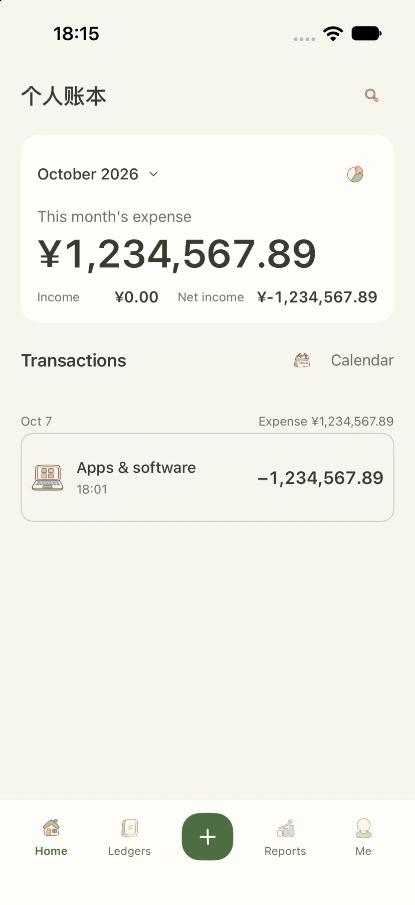
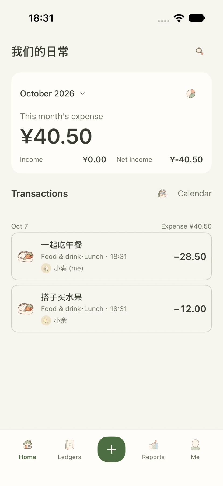

Free
¥0
Daily transactions, multiple ledgers, categories, reports, and budgets. Import and backup restore are free forever.
SHIYU LEDGER · NATIVE EXPENSE TRACKER
Ad-free, offline-first, and no account required.
Clean expense tracking with family shared ledgers and smart screenshot recognition.
Designed for iPhone and iPad · Preparing for App Store

Clean interface without popups, banners, or ads.
No account to register. Record offline immediately.
Data stored locally on device, with optional iCloud sync.
FEATURES
Support for multiple ledgers, custom categories, tags, and monthly budgets to keep every expense organized.

Create a family ledger and invite members to record together. Groceries, utilities, and household expenses stay transparent.
On-device OCR extracts transaction details locally. Optional Shortcuts integration enables smart receipt parsing, reviewed before saving.

WIDGETS
Add quick entry buttons, spending summaries, and remaining budgets directly to your screens.


LOCALIZATION
Supports Simplified Chinese and English. Switch freely in app settings. English uses standard thousands separators (e.g. ¥1,234,567.89). Base currency is CNY; saved ledger names, categories, and amounts remain unchanged.
PRICING
Core bookkeeping is free forever. Unlock cloud sync, family collaboration, and smart recognition with Pro.
Pro includes a 7-day free trial. Ends automatically without surprise charges.
Daily transactions, multiple ledgers, categories, reports, and budgets. Import and backup restore are free forever.
Personal iCloud sync, family shared ledgers, screenshot OCR, data export, and app lock. Auto-renewing subscription.
One-time purchase for permanent Pro access. No renewals required.
Reference prices shown are for mainland China in CNY. Actual prices are shown on the App Store confirmation screen. The 7-day trial is available once per account. All historical data is preserved upon expiration. View Purchase Terms →
FAQ
Yes. Core bookkeeping works completely offline without registering or logging in. An Apple account on your device is only required when enabling iCloud sync or family sharing.
All entries are stored locally on your device by default. When sync is enabled, data is stored in your private Apple CloudKit container. We operate no servers that store your financial records. See our Privacy Policy.
No. The 7-day trial is a standalone trial period. It terminates automatically without charging or converting into a subscription. Auto-renewal only applies if you actively purchase the Annual plan.
Email us at 906626481@qq.com. Please include your app version, iOS version, and reproduction steps.